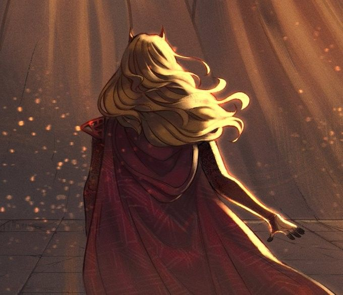

Ванда Максимофф (Wanda Maximoff) - мутант, обладающая способностью изменять вероятности. Она дочь Магнето и его покойной жены Магды (Magda). Также у неё есть брат-близнец, Пьетро (Pietro), больше известный всем как Ртуть (Quicksilver); она старшая в семье. Вскоре после того, как Магда поняла, что беременна, она стала свидетельницей того, как Магнето использовал свои способности магнетизма, и поняла, что он мутант. Магда боялась мутантов, поэтому не рассказала Магнето о том, что была беременна; более того, она сбежала при первой возможности. В конце концов, она очутилась на горе Вундагор (Wundagore), где её приютила корова-гуманоид по имени Бова (Bova). Близнецы были рождены именно там, поэтому именно мистические энергии Вундагора даровали Ванде её магические способности, наряду с силами мутанта. Через некоторое время после их рождения Магда сошла с ума, уверенная, что Магнето найдет их. Несмотря на все доводы со стороны Бовы, Магда сбежала в снежную бурю, оставив близнецов. Считается, что там она и погибла.

Через некоторое время и Ванде и Пьетро пришлось использовать свои способности, из-за чего они вновь подверглись гонениям.
В этот раз их спас Магнето. Взамен они вступили в ряды Братства Мутантов (Brotherhood of Evil Mutants). Ванда стала известна, как Алая Ведьма, а Пьетро, из-за своей сверхчеловеческой скорости – как Ртуть.
Они были первыми членами Братства, но никто из них троих не знал, что Магнето их отец.
Ванда к тому вермени стала еще более прекрасной, из-за чего Жаба (Toad) и Повелитель Разума (Mastermind), оба участники Братства, стали оказывать ей внимание, но все их попытки пресекал Магнето. Однако, каждый раз, когда Ванда хотела покинуть Братство, он причинял ей боль. К этому времени он набрал в команду таких могучих созданий, как Нэмор (Namor). Нэмор очень скоро покинул команду, когда увидел, как Магнето наказывает Ванду за её непокорность. После того, как Магнето забрала космическая сущность по имени Незнакомец (Stranger), Братство распалось.
В это же время Железный Человек (Iron Man) предложил близнецам присоединиться к Мстителям (Avengers)